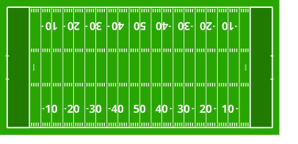

American Football

Der Sport wird von zwei Teams gespielt, die jeweils 11 Spieler auf dem Feld haben. Ziel ist es, am Ende des Spiels mehr Punkte als das
gegnerische Team zu haben. Dabei wechseln sich die Teams zwischen Angriff (Offense) und Verteidigung (Defense) ab.
Spielfeld

Das Spielfeld ist 100 Yards lang und 53,3 Yards breit, mit Endzonen an beiden Enden für die Punkte.
Spielregeln
- Ein Spiel besteht aus vier Vierteln zu je 15 Minuten.
- Ziel des Spiels ist es, mehr Punkte als das gegnerische Team zu erzielen.
- Punkte können durch einen Touchdown (6 Punkte), ein Field Goal (3 Punkte), eine Two-Point Conversion (2 Punkte) oder einen Extrapunkt nach einem Touchdown (1 Punkt) erzielt werden.
- Das Team in Ballbesitz hat vier Versuche (Downs), um mindestens 10 Yards Raumgewinn zu erzielen. Gelingt dies, erhält es neue vier Versuche.
- Wenn das angreifende Team die 10 Yards nicht schafft, wechselt der Ballbesitz zum Gegner.
- Der Ball darf durch Werfen (Pass) oder Tragen (Rush) bewegt werden.
- Kontakt zwischen Spielern ist erlaubt, allerdings sind bestimmte Regeln für Tackling, Blocken und Schutz des Quarterbacks zu beachten.
- Strafen werden für Regelverstöße verhängt und führen zu Raumverlust, Wiederholung des Downs oder Punktabzug.